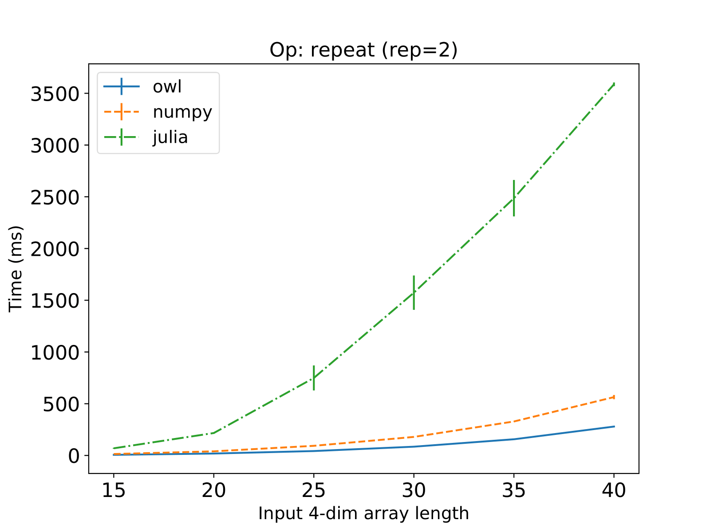
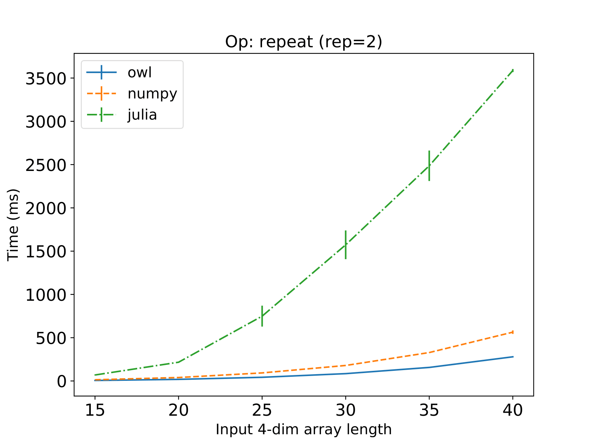

Core Optimisation
TBD
Background
Numerical Libraries
There are two widely used specifications of low level linear algebra routines. Basic Linear Algebra Subprograms (BLAS) consists of three levels of routines, from vector to matrix-vector and then to matrix-matrix operations. The other one, Linear Algebra Package (LAPACK), specifies routines for advanced numerical linear algebra, including solving systems of linear equations, linear least squares, eigenvalue problems, SVD, etc.
The implementations of these specifications vary in different libraries, e.g. OpenBLAS~ and Math Kernel Library (MKL). OpenBLAS is a popular open source optimised BLAS library. MKL is a proprietary library, and provides highly optimised mathematical functions on Intel processors. It implements not only BLAS and LAPACK but also FFT and other computationally intensive mathematical functions. Another implementation is Eigen, a C++ template linear algebra library. The CPU implementation of many kernels in TensorFlow uses the Eigen Tensor class. The Automatically Tuned Linear Algebra Software (ATLAS) is another BLAS implementation, featuring automatically-tuned routines on specific hardware.
These basic libraries focus on optimising the performance of operations in different hardware and software environment, but they don’t provide APIs that are easy to use for end users. That requires libraries such as NumPy, Julia, Matlab, and Owl. NumPy is the fundamental package for scientific computing with Python. It contains a powerful N-dimensional array abstraction. Julia is a high-level, high-performance dynamic programming language for numerical computing. Both are widely used and considered state of the art in numerical computing. Both NumPy and Julia rely on OpenBLAS or MKL for linear algebra backends. Matlab, the numerical computing library that has millions of uses worldwide, also belongs to this category.
Deep learning libraries such as TensorFlow, PyTorch, and MxNet are popular. Keras is a user-friendly neural networks API that can run on top of TensorFlow. Instead of the wide range of numerical functionalities that NumPy etc. provide, these libraries focus on building machine learning applications for both research and production. Owl library provides its own neural network module.
Optimisation of Numerical Computation
To achieve optimal performance has always been the target of numerical libraries. However, the complexity of current computation platforms is growing fast, and the “free” performance boost that benefits from hardware upgrade also stagnates. These factors have made it difficult to achieve the optimal performance. Below list some of the techniques that I use to optimise operations in Owl.
One method to utilise the parallelism of a computation platform is to use the Single Instruction Multiple Data (SIMD) instruction sets. They exploit data level parallelism by executing the same instruction on a set of data simultaneously, instead of repeating it multiple times on a single scalar value. One easy way to use SIMD is to rely on the automatic vectorisation capabilities of modern compilers, but in many cases developers have to manually vectorise their code with SIMD intrinsic functions. The Intel Advanced Vector Extensions (AVX) instruction set is offered on Intel and AMD processors, and the ARM processors provide the Advanced SIMD (NEON) extension.
Another form of parallelism is to execute instructions on multiple cores. OpenMP is a C/C++/FORTRAN compiler extension that allows shared memory multiprocessing programming. It is widely supported on compilers such as GCC and Clang, on different hardware platforms. It is important for a numerical library to porting existing code to the OpenMP standard.
To achieve optimal performance often requires choosing the most suitable system parameters on different machines or for different inputs. Aiming at providing fast matrix multiplication routines, the ATLAS library runs a set of micro-benchmarks to decide hardware specifications, and then search for the most suitable parameters such as block size in a wide tuning space.
One general algorithm cannot always achieve optimal performance. One of the most important techniques the Julia uses is ``multiple dispatch’’, which means that the library provides different specific implementations according to the type of inputs.
Besides these techniques, the practical experience from others always worth learning during development. These principles still hold true in the development of modern numerical libraries. An optimised routine can perform orders of magnitude faster than a naive implementation.
Interfacing to C Code
We interface to C. It’s common practice
How NumPy and Julia interfaces
The core operations are ndarray operation.
The other, such as FFT, Linear Algebra, are explained in their respective chapter.
Ndarray Operations
N-dimensional array (ndarray) is the core data type of a numerical library. As we have seen in the previous chapter
The internals about ndarray:
An ndarray is a container of items of the same type. It consists of a contiguous block of memory, combined with an indexing scheme that maps N integers into the location of an item in the block. A stride indexing scheme can then be applied on this block of memory to access elements. Two widely used types of indexing schemes are column-major that is used in FORTRAN and row-major of C.
List the categories of operations that are optimised with C.
- Math, including map, fold, cmp
- Conv and pooling
- Repeat
- Slicing
- Sort
- Transpose
- Slicing
- matrix: swap, check (is_*)
- Contract
- Slide
Why choose these operations
From OCaml to C
Let’s use examples to see exactly how we implement core operations wih C and interface them to OCaml.
In Owl, ndarray is built on OCaml’s native Bigarray.Genarray. The Bigarray module implements multi-dimensional numerical arrays of integers and floating-point numbers, and Genarray is the type of Bigarrays with variable numbers of dimensions.
Genarray is of type ('a, 'b, 't) t. It has three parameters: OCaml type for accessing array elements ('a), the actual type of array elements ('b), and indexing scheme ('t). The initial design of Owl supports both col-major and row-major indexing, but this choice leads to a lot of confusion, since the FORTRAN way of indexing starts from index 1, while the row-major starts from 0. Owl sticks with the row-major scheme now, and therefore in the core library the owl ndarray is define as:
open Bigarray
type ('a, 'b) owl_arr = ('a, 'b, c_layout) Genarray.tNow, let’s look at the 'a and 'b. In the GADT type ('a, 'b) kind, an OCaml type 'a is for values read or written in the Bigarray, such as int or float, and 'b represents the actual contents of the Bigarray, such as the float32_elt that contains 32-bit single precision floats. Owl supports four basic types of element: float, double, float complex, and double complex number. And we use the definition of type ('a, 'b) kind in the BigArray module.
open Bigarray
type ('a, 'b) kind =
| Float32 : (float, float32_elt) kind
| Float64 : (float, float64_elt) kind
| Complex32 : (Complex.t, complex32_elt) kind
| Complex64 : (Complex.t, complex64_elt) kindSuppose we want to implement the sine math function, which maps the sin function on every elements in the . We we need to implement four different versions, each for one of these four number types. The basic code looks like this:
let _owl_sin : type a b. (a, b) kind -> int -> ('a, 'b) owl_arr -> ('a, 'b) owl_arr -> unit =
fun k l x y ->
match k with
| Float32 -> owl_float32_sin l x y
| Float64 -> owl_float64_sin l x y
| Complex32 -> owl_complex32_sin l x y
| Complex64 -> owl_complex64_sin l x y
| _ -> failwith "_owl_sin: unsupported operation"The _owl_sin implementation takes four input parameter, the first is the number type kind, the second is the total number of elements l to apply the sin function, the third one x is the source ndarray, and the final one y is the target ndarray. This function apply the sin function on the first l elements from x and then put the results in y. Therefore we can simply add a simple layer of wrapper around this function in the Dense module:
let sin x =
let y = copy x in
_owl_sin (kind x) (numel y) x y;
yBut wait, what are the owl_float32_sin and owl_float64_sin etc. in _owl_sin function? How are they implemented? Let’s take a look:
external owl_float32_sin
: int
-> ('a, 'b) owl_arr
-> ('a, 'b) owl_arr
-> unit
= "float32_sin"OCaml provides mechanism for interfacing with C using the external keyword: external ocaml-function-name : type = c-function-name. This defines the value name ocaml-function-name as a function with type type that executes by calling the given C function c-function-name. Here we already have a C function that is called “float32_sin”, and owl_float32_sin calls that function.
Now, finally, we venture into the world of C. We first need to include the necessary header files provided by OCaml:
#include <caml/mlvalues.h> // definition of the value type, and conversion macros
#include <caml/alloc.h> //allocation functions to create structured ocaml objects
#include <caml/memory.h> // miscellaneous memory-related functions and macros
#include <caml/fail.h> //functions for raising exceptions
#include <caml/callback.h> // callback from C to ocaml
#include <caml/threads.h> //operations for interfacing in the presence of multiple threadsIn the C file, the outlines of function float32_sin is:
CAMLprim value float32_sin(value vN, value vX, value vY) {
...
}To define a C primitive to interface with OCaml, we use the CAMLprim macro. Unlike normal C functions, all the input types and output type are defined as value instead of int, void etc. It is represents OCaml values and encodes objects of several base types such as integers, strings, floats, etc. as well as OCaml data structures. The specific type of input will be passed in when the functions is called at runtime.
Now let’s look at the content within this function. First, the input is of type value and we have to change them into the normal types for further processing.
CAMLparam3(vN, vX, vY);
int N = Long_val(vN);
struct caml_ba_array *X = Caml_ba_array_val(vX);
float *X_data = (float*) X->data;
struct caml_ba_array *Y = Caml_ba_array_val(vY);
float *Y_data = (float *) Y->data;These “value” type parameters or local variables must be processed with one of the CAMLparam macros. Here we use the CAMLparam3 macro since there are three parameters. There are six CAMLparam macros from CAMLparam0 to CAMLparam5, taking zero to five parameters. For more than five parameters, you can first call CAMLparam5, and then use one or more CAMLxparam1 to CAMLxparam5 functions after that.
The next step we convert the value type inputs into normal types. The Long_val macro convert the value into long int type. Similarly, there are also Double_val, Int32_val etc. We convert the Bigarray to a structure to the structure of type caml_ba_array. The function Caml_ba_array_val returns a pointer to this structure. Its member data is a pointer to the data part of the array. Besides, the information of ndarray dimension is also included. The member num_dims of caml_ba_array is the number of dimensions, and dim[i] is the i-th dimension.
One more thing to do before the “real” coding. If the computation is complex, we don’t want all the OCaml threads to be stuck. Therefore, we need to call the caml_release_runtime_system function to release the master lock and other OCaml resources, so as to allow other threads to run.
caml_release_runtime_system(); Finally, we can do the real computation, and now that we have finished converting the input data to the familiar types, the code itself is straight forward;
float *start_x, *stop_x;
float *start_y;
start_x = X_data;
stop_x = start_x + N;
start_y = Y_data;
while (start_x != stop_x) {
float x = *start_x;
*start_y = sinf(X);
start_x += 1;
start_y += 1;
};That’s all, we move the pointers forward and apply the sinf function from the C standard library one by one.
As you can expect, when all the computation is finished, we need to end the multiple threading.
caml_acquire_runtime_system();And finally, we need to return the result with CAMLreturn macro – not normal type, but the value type. In this function we don’t need to return anything, so we use the Val_unit macro:
CAMLreturn(Val_unit);That’s all for this function. But if we want to return a, say, long int, you can the use Val_long to wrap an int type into value type. In the Owl core C code, we normally finish the all the computation and copy the result in-place, and then returns Val_unit, as shown in this example.
Now that we finish float32_sin, we can copy basically all the code above and implement the rest three functions: float64_sin, complex32_sin, and complex64_sin. However, this kind of coding practice is apparently not ideal. Instead, in the core implementation, Owl utilises the macros and templates of C. In the above implementation, we abstract out the only three special part: function name, math function used, and data type. We assign macro FUN to the first one, MAPFN to the next, and NUMBER to the third. Then the function is written as a template:
CAMLprim value FUN(value vN, value vX, value vY) {
...
NUMBER *X_data = (NUMBER *) X->data;
...
*start_y = (MAPFN(x));
...
}This template is defined in the file owl_ndarray_maths_map.h file. In anther stub C file, these macros are defined as:
#define FUN float32_sin
#define NUMBER float
#define MAPFN(X) (sinf(X))
#include "owl_ndarray_maths_map.h"In this way, we can easily extend this template to other data types. To extend it to complex number, we can use the _Complex float and _Complex double as number type, and the csinf and csin for math function function on complex data type.
#define FUN4 complex32_sin
#define NUMBER _Complex float
#define MAPFN(X) (csinf(X))
#include "owl_ndarray_maths_map.h"Once finished the template, we can find that, this template does not only apply to sin, but also the other triangular functions, and many more other similar unary math function that accept one input, such as exp and log, etc.
#define FUN float32_log
#define NUMBER float
#define MAPFN(X) (logf(X))
#include "owl_ndarray_maths_map.h"Of course, the template can become quite complex for other types of function. But by utilising the template and macros, the core C code of Owl is much simplified. A brief recap: in the core module we are talking about three files. The first one is a ocaml file that contains functions like _owl_sin that interfaces to C code using external keyword. Then the C implementation is divided into the template file, normally as a .h header file, and is named as *_impl.h. The stub that finally utilises these templates to generate functions are put into *_stub.c files.
Note that if the input parameters are more than 5, then two primitives should be implemented. The first bytecode function takes two arguments: a pointer to a list of value type arguments, and an integer that indicating the number of arguments provided. The other native function takes its arguments directly. The syntax of using external should also be changed to include both functions.
external name : type = bytecode-C-function-name native-code-C-function-nameFor example, in our implementation of convolution we have a pair of functions:
CAMLprim value FUN_NATIVE (spatial) (
value vInput_ptr, value vKernel_ptr, value vOutput_ptr,
value vBatches, value vInput_cols, value vInput_rows, value vIn_channel,
value vKernel_cols, value vKernel_rows,
value vOutput_cols, value vOutput_rows, value vOut_channel,
value vRow_stride, value vCol_stride,
value vPadding, value vRow_in_stride, value vCol_in_stride
) {
....
}
CAMLprim value FUN_BYTE (spatial) (value * argv, int argn) {
return FUN_NATIVE (spatial) (
argv[0], argv[1], argv[2], argv[3], argv[4], argv[5], argv[6], argv[7],
argv[8], argv[9], argv[10], argv[11], argv[12], argv[13], argv[14],
argv[15], argv[16]
);
}In the stub we define the function name macros:
#define FUN_NATIVE(dim) stub_float32_ndarray_conv ## _ ## dim ## _ ## native
#define FUN_BYTE(dim) stub_float32_ndarray_conv ## _ ## dim ## _ ## bytecodeAnd therefore in the OCaml interfacing code we interface to C code with:
external owl_float32_ndarray_conv_spatial
: ('a, 'b) owl_arr -> ('a, 'b) owl_arr -> ('a, 'b) owl_arr -> int -> int -> int -> int -> int -> int -> int -> int -> int -> int -> int -> int -> int -> int -> unit
= "stub_float32_ndarray_conv_spatial_bytecode" "stub_float32_ndarray_conv_spatial_native"More details of interfacing to C code OCaml can be found in the OCaml documentation. Another approach is to use the Foreign Function Interface, as explained here.
Optimisation Techniques
We try to apply multiple techniques if possible.
Show some optimisation techniques at the C level, and demonstrate their effect. It does not have to perform better than every one.
In this section, I choose representative operations. I compare their performance in different numerical libraries: Owl, NumPy, and Julia. The purpose is two-fold: first, to bring insight into the low-level structure design; second, to demonstrate the possible optimisations in implementing these operations.
In the performance measurements, I use multiple input sizes, and observe the execution time and memory usage. The experiments are conducted on both a laptop (Thinkpad T460s, Core i5 CPU) and a Raspberry Pi (rPi) 3B model. They represent different CPU architectures and computation power.
Map Operations
The map operations are a family of operations that accept ndarray as input, and apply a function on all the elements in the ndarray. I use the trigonometric sin operation as a representative map arithmetic operation in this section. It requires heavy computation. In the implementation, it directly calls the low-level C functions via a single template. It calls function MAPFN on one array element-wise, and the result is put in the other array. In the case of sine function, it calls sinf or sin function from the C standard library libc.
for (int i = 0; i < N; i++) {
NUMBER x = *(start_x + i);
*(start_y + i) = (MAPFN(x));
}Therefore, the performance is mainly decided by the linked low level library, and may be affected by the cost of wrapper around these libraries. Both vectorisation and parallelisation techniques can be utilised to improve its performance.
Applying computation-intensive operations such as sine in a for-loop can be vectorised using SIMD instructions. The computation performance can be boosted by executing single instruction on multiple data in the input ndarray. There are SIMD implementations of certain mathematical functions , and compilers such as GNU GCC also provide options to automatically generating vectorised loop.
Map function can also benefit from parallel execution on the multi-core CPU, such as using OpenMP. To parallelise a loop in C program, I only need to add a single line of OpenMP compiler directive, as shown in code below.
for (int i = 0; i < N; i++) {
NUMBER x = *(start_x + i);
*(start_y + i) = (MAPFN(x));
}Now that I have different versions of implementation: normal, SIMD version, and OpenMP version. The mechanism for switching between these different implementations in Owl is to provide another set of operations and switch depending on configuration flags. For example, the OpenMP implementation is switched as below.
#ifdef _OPENMP
#define OWL_NDARRAY_MATHS_MAP "owl_ndarray_maths_map_omp.h"
#else
#define OWL_NDARRAY_MATHS_MAP "owl_ndarray_maths_map.h"
#endif

To measure performance, I compare the sine operation in Owl, NumPy, Julia, and C. The compiling flags in C and Owl are set to the same level 3 optimisation. The input is a vector of single-precision float numbers. I increase the input size from 100,000 to 5,000,000 gradually. The comparison results are shown in fig. 1 and fig. 2.
It can be seen that the execution time in Owl grows linearly with input size, and very similar to that of C library. Julia has large deviation, but it performs fastest on rPi, even faster than C. It is because of Julia utilises NEON, the SIMD architecture extension on ARM. In some cases, NumPy can be compiled with MKL library. The MKL Vector Math functions provide highly optimised routines for trigonometric operations. In this evaluation I use NumPy library that is not compiled with MKL, and it performs close to Owl and C, with slightly larger deviation.
Note the trade-off in code design. My current approach is a common template for all map functions, and relies on the C library for implementation. A specific implementation using SIMD for each operation would perform better, but that would require more complex logic to decide the execution hardware and software environment, and the code structure would be less generic.
Another optimisation is to remove the memory copy phase by applying mutable operations. A mutable operation does not create new memory space before calculation, but instead utilise existing memory space of input ndarray.
Reduction Operations
Reduction operations such as sum and max accumulate values in an ndarray along certain axes by certain functions. For example, sum is used for implementing BatchNormalisation neuron, which is a frequently used neuron in DNN.
A naive implementation of multi-axes sum operation is to repeat sum operation along one axis for each axis specified. However, it creates extra temporary intermediate results. In applications such as DNN, the inefficiency of reduction operation becomes a memory and performance bottleneck. The implementation is shown below.
int iy = 0;
int cnt = 0;
for (int ix = 0; ix < N;) {
for (int k = 0; k < innersize; k++) {
ACCFN(y[iy+k], x[ix+k]);
}
ix += innersize;
cnt++;
if (cnt == loopsize) {
cnt = 0;
int residual;
int iterindex = ix;
int pre_iteridx = ix;
for (int i = ndim - 1; i >= 0; i--) {
iterindex /= x_shape[i];
residual = pre_iteridx - iterindex * x_shape[i];
iy += residual * strides[i];
pre_iteridx = iterindex;
}
}
}The ACCFN(y, x) function in this template is the accumulation function that is unique to each operation. For sum, it adds y and x and accumulate the value to y. In this algorithm, the elements in original ndarray x and the target reduced ndarray y are iterated one-by-one, but at different steps, indicating by iy and ix.
One optimisation step before this algorithm is to combine adjacent axes. For example, if an ndarray of shape \([2,3,4,5]\) is to be reduced along the second and third axis, then it can be simplified to reducing an ndarray of shape \([2,12,5]\).

Since it involves multiple axes, to evaluate the reduction operation, I use a four-dimensional ndarray of float numbers as input. All four dimensions are of the same length. I measure the peak memory usage with increasing length, each for axis equals to 0, 1, and both 0 and 2 dimension. The evaluation result compared with NumPy and Julia is shown in fig. 3.
Repeat Operations
Repeat is another operation that is frequently used in DNN. It is used for implementing the Upsampling and BatchNormalisation neurons. The repeat operation repeats elements of an ndarray along each axis for specified times. It consists of inner repeat and outer repeat (or tile). The former repeats elements of an input ndarray, while the later constructs an ndarray by repeating the whole input ndarray by specified number of times along each axis.
Similar to the reduction functions, a multi-axes repeat function can hardly achieve ideal performance by simply using existing operation for multiple times. I implement multi-axes repeat in Owl and it outperforms NumPy and Julia.
The optimisation I use in the algorithm follows two patterns. The first is to provide multiple implementations for different inputs. For example, if only one axis is used, then a specific implementation for that case would be much faster than a general solution. The second is to reduce intermediate results. Similar to the reduction operations, a multiple-axes repeat could be implemented by multiple single axis operation, but it would lead to extra memory usage and much slower execution speed.
The core code of my proposed repeat algorithm is shown below. Here I define HD to be the highest non-one-repeat dimension, copy the HD dimension from source ndarray to target ndarray, and then copy the lower dimensions within target ndarray.
int block_num[HD];
for (int i = 0; i < HD; ++i) {
block_num[i] = slice_x[i] / slice_x[HD];
}
int counter[HD];
memset(counter, 0, sizeof(counter));
int ofsx = 0;
int ofsy = 0;
int block_sz = reps[HD];
int num_hd = block_num[0];
/* Copy the last-dim block */
for (int i = 0; i < num_hd; ++i) {
int ofsy_sub = ofsy;
if (block_sz == 1) {
COPYFUN(slice_x[HD], x, ofsx, 1, y, ofsy, 1);
} else {
for (int j = 0; j < slice_x[HD]; ++j) {
COPYFUN(block_sz, x, ofsx + j, 0, y, ofsy_sub, 1);
ofsy_sub += block_sz;
}
}
/* Increase index */
ofsx += slice_x[HD];
ofsy += stride_y[HD - 1] * reps[HD - 1];
for (int j = HD - 1; j > 0; --j) {
int c = counter[j];
if (c + 1 == block_num[j]) {
ofsy += stride_y[j - 1] * (reps[j - 1] - 1);
}
counter[j] = (c + 1 == block_num[j] ? 0 : c + 1);
}
}The evaluation of repeat is similar to that of reduction operations. I use a four-dimensional ndarray of float numbers as input. All four dimensions are of the same length. I measure the speed for increasing length, the repetition times is set to 2 on all dimensions.
The evaluation results compared with NumPy and Julia are shown in figures below. I also measure the peak memory usage. As can be seen, my repeat operation achieves about half of that in NumPy with regard to both execution speed and memory usage. The outer repeat operation in NumPy is implemented using the single axis version, and thus is less efficient. The repeat operation in Julia is much slower. One reason is that repeat is not a computation-intensive operation, so the optimisation techniques such as static compilation and vectorisation are of less importance than algorithm design.
 
 
Convolution Operations
The convolution operations take up the majority of computation involved in deep neural network. A convolution operation takes two ndarrays as input: image (\(I\)) and kernel (\(F\)). In a 2-dimensional convolution, both ndarrays are of four dimensions. The image ndarray has \(B\) batches, each image has size \(H\times W\), and has \(IC\) channels. The kernel ndarray has \(R\) rows, \(C\) columns, the same input channel \(IC\), and output channel \(K\). The convolution can then be expressed as:
\[CONV_{b,h,w,k} = \sum_{ic=1}^{IC}\sum_{r=1}^{R}\sum_{c=1}^{C}I_{b,h+r,w+c,ic}F_{r,c,ic,k}.\qquad(1)\]
The convolution operation is first implemented in Owl by interfacing to Eigen library, which is also used in TensorFlow for CPU convolution implementation. However, interfacing to this C++ library proves to be problematic and leads to a lot of installation issues. Therefore I decide to use C to implement convolutions, which consists of three types: Conv, ConvBackwardKernel, ConvBackwardInput.
The Conv operation calculates the output given input image and kernel. Similarly, ConvBackwardKernel calculates the kernel given the input and output ndarrays, and ConvBackwardInput gets input ndarray from kernel and output. The last two are mainly used in the backpropagation phase in training a DNN, but all three operations share a similar calculation algorithm.
A naive convolution algorithm is to implement eq. 1 with nested for-loops. It is easy to see that this approach does not benefit from any parallelisation, and thus not suitable for production code.
The next version of implementation uses the im2col algorithm. A im2col-based convolution transforms the input ndarray into a matrix with redundancy. Convolution then can be performed as one matrix multiplication, which can benefit from highly optimised linear algebra packages such as OpenBLAS.
However, this algorithm requires generating a large temporary intermediate matrix. Depending on input image size, this matrix can take Gigabytes of memory in applications such as FST. Algorithms such as Memory-efficient Convolution aims to reduce the size of this intermediate matrix, but still fail with large input or kernel sizes.
To reduce the memory usage, I apply the method proposed in (Goto and Geijn 2008), which is to cut matrices into small blocks so as to fit into the L1/L2 cache of CPU to do high-performance computation while reducing the memory usage, regardless of input size. Multiplication of two matrices can be divided into multiplication of small blocks. I implement the method proposed in (Goto and Geijn 2008) to calculated suitable block size based on the cache size of CPU.
To further improve the performance, I use the SIMD intrinsics in filling the temporary matrix from input ndarray. For one thing, depending on the input channel is divisible by the supported data length of SIMD (e.g. 8 float numbers for AVX), I provide two set of implementations for filling the temporary blocks. During loading data from input ndarrays to these matrix blocks, I also use AVX intrinsics such as _mm256_load_ps to improve performance. Finally, the matrix multiplication between two small matrix blocks is implemented by the routines in OpenBLAS.
This is the current method I use in implementing various convolutions in Owl, on all 1-3 dimensions, and for different types such as dilated and transpose convolution operations. Above this C implementation level, mutable convolution operations are also provided, so as to further improve performance by utilising existing memory space.


To measure the performance of my convolution implementation, I compare the three convolution operations on both the labtop and rPi as described before. I use two settings: fixed input size with varying kernel size; and fixed kernel size with varying input size. The Owl code is interfaced to existing implementation and Eigen library. The results in fig. 4 and fig. 5show that, our Conv2D implementation is as efficient as that in Eigen, and the Conv2DBackwardKernel operation is faster on the rPi. In fig. 6 it is shown that our proposed implementation of Conv2DBackwardInput operation uses less memory than Eigen.
References
Goto, Kazushige, and Robert A Geijn. 2008. “Anatomy of High-Performance Matrix Multiplication.” ACM Transactions on Mathematical Software (TOMS) 34 (3): 12.